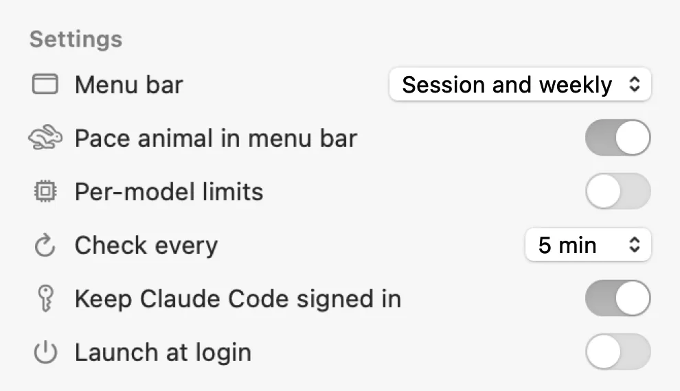
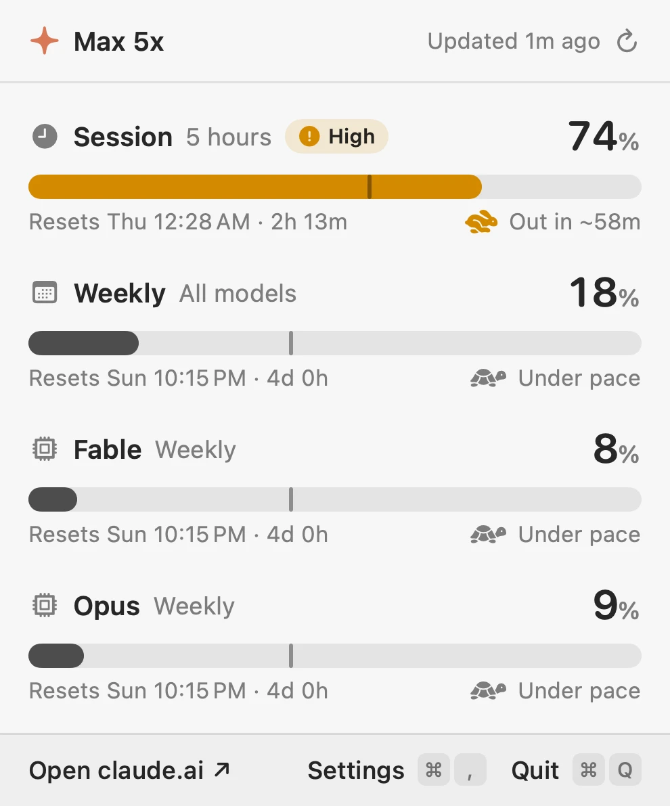
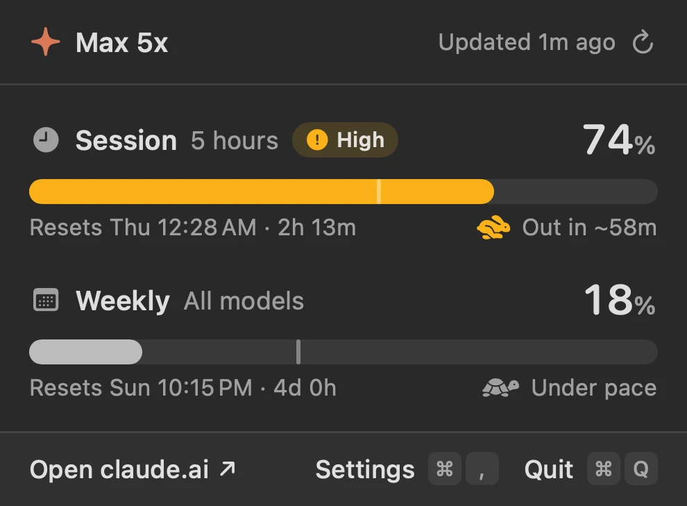

Know where you stand before you hit the limit.
A tiny macOS menu bar app that shows how much of your Claude session and weekly limits you've used. A small animal tells you whether you'll run out before the reset.
v1.4.0 · Free · macOS 14+ · Needs Claude Code signed in with Pro or Max
Try it
Pace
Percentages tell you where you are. Animals tell you where you're headed.
Pace compares how much of a limit you've used with how much of its window has passed, then projects where you'll end up at the reset.
-
Under pace
At this rate you'll finish below 75% of the limit. Carry on.
-
On pace
You'll land between 75% and 100%. You're using what you pay for.
-
Ahead
You'll run out before the reset. The popover says roughly when.
-
Way ahead
You're heading for more than one and a half times the limit. Time to slow down.
projected = used ÷ elapsed
74% used, 56% of the window gone → on track for 1.3× the limit → ahead, out in about 58 minutes.
The details
Small on purpose.
- Menu bar: session %, weekly %, and one animal for whichever limit is more urgent. Show both, or just one.
- Popover: a bar per limit with a tick for how much of the window has passed, the reset time and the pace. Bars turn amber at 70% and red at 90%.
- Per-model limits: turn them on to see each model's own weekly limit, when your plan has one.
- Keeps Claude Code signed in: shortly before the token expires, it has Claude Code refresh its own login. You can turn it off.
- Light and dark, closes when you click away, ⌘R refreshes, ⌘, opens settings.
- Checks every 5 minutes by default, launches at login if you like, and updates itself from GitHub Releases.



Privacy
One token. One endpoint. Nothing else.
- Reads
- The sign-in Claude Code already saved in your Keychain. No new login, no Keychain prompt.
- Sends
- That token to
api.anthropic.com/api/oauth/usage, the same endpoint behind Claude Code's own usage numbers. - Never
- Reads your conversations or files, refreshes or changes the token itself, or stores anything except its settings.
- Updates
- Checks this project's GitHub Releases every 6 hours and verifies each download's SHA-256. You can turn it off.
Install
Paste this into Terminal.
It downloads the latest release, checks its SHA-256, installs to Applications and opens it. Look for it in your menu bar. Read the script · Download the .zip
- 1macOS 14 or later, Apple silicon or Intel
- 2Claude Code installed and signed in with a Pro or Max plan
- 3That's it: the app reuses Claude Code's sign-in
Questions
Is this made by Anthropic?
No. It's an unofficial app by one person, not affiliated with or endorsed by Anthropic. It reads an undocumented usage endpoint that may change or disappear, and if it does, the app will tell you it can't fetch your usage rather than show wrong numbers.
Does checking my usage use up my usage?
Checking doesn't. It asks the usage endpoint how much you've used; it doesn't send any prompts. By default it checks every 5 minutes, and backs off if it's rate limited. The one exception is keeping Claude Code signed in: about every 8 hours that costs a few thousand Haiku tokens (see below).
Why animals?
Because "projected utilization at reset: 1.31×" is a lot to read in a menu bar. A rabbit is not.
What happens when my token expires?
The app never refreshes it itself. Shortly before it expires, about every 8 hours, it runs one tiny headless claude -p request on Haiku, with no tools, MCP servers, hooks or saved session, and Claude Code refreshes and saves its own login. Prefer it didn't? Turn off Keep Claude Code signed in in Settings, then run claude once when the token expires and the app picks up the new one.
Can I rebuild it myself?
Yes. The SPEC.md describes the whole app down to the point sizes, so you can hand it to Claude Code in an empty folder and get the same app back. Or clone the repo and run ./build.sh --install.
Claude Usage Bar is an independent, open-source project. Claude is a trademark of Anthropic, PBC. This project is not affiliated with or endorsed by Anthropic.